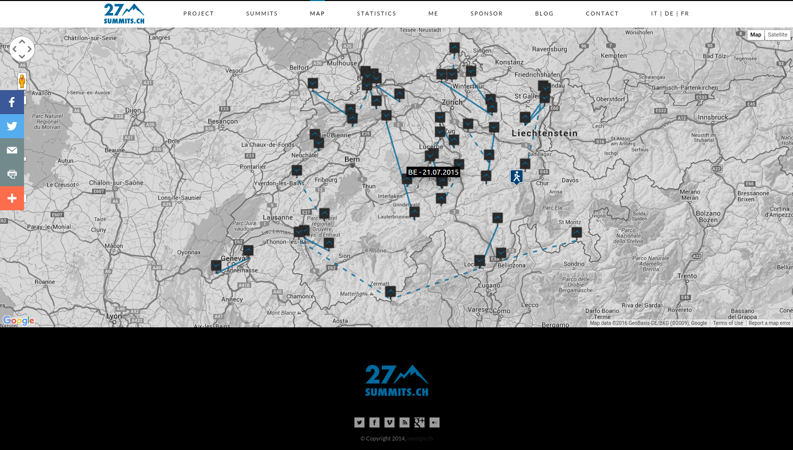

Anatomy of a Web Map
Anatomy of a Web Map Marco Bernasocchi
Marco Bernasocchi
MSc in GIS @ UNIZH
Developer, Consultant, Teacher & foremost Tinkerer
Skier, Climber, Diver
MARCO BERNASOCCHI - QGIS on android
MATTHIAS KUHN - QGIS core committer
Developers, Consultants and Teachers for C++, Python, Web, QGIS, Android, ...
We
l[i|o]ve open source.
Reuse and edit this presentation on
githubPlease do ask questions
Now let's get started
Today we will be talking about the very most basic principles of web mapping.
Including a little history, so you can get an idea of how web maps have come to be.
There are always exceptions! We'll talk about those too (Tomorrow).
We'll talk a lot about Google, but we're going to show you a 100% open source Google-free stack
But first, what does anatomy have to do with a web map?
Well, both bodies and web maps have components and systems that interact and intertwine.
Instead of cells, maps have data.
Instead of systems, web maps have styles, tiles and servers.
What is a web map?
How is a web map different than a digital map?
Digital: involves a computer, but might not be accessible by the internet.
A web map is a kind of digital map. And both are obviously quite different from analog maps, such as paper maps and atlases!
We're talking about web maps that you view in a browser, like...

Making maps for
mobile devices can be similar, but we're not talking about that today.

We're also not talking about
digital globes like
Google Earthbut how about a little history:
How did web maps come to be?

First, there were digital maps like
ArcGIS.
Although useful, GIS for the Web is not user friendly :(

In 1996, Mapquest launched its web service.
ta da!
Directions! Online! Revolutionary!
The problem: it was slow to load :(
MapQuest required a full page refresh to scroll or zoom, and was always aligned to tile boundaries.
Google Maps really paved the way for online mapping, beginning in 2005.
But what was the revolution?
Was it the interface?
The red marker?
The weather widget?
No!
It was the
tile. 
Let's talk about tiles for a minute.
All tiles = same size!
256x256 pixels
same boundaries

Tiles could be a road map, a satellite image, or anything else that's a raster!

All these little tiles load
way faster than one big map.
Web maps like this load the tiles that are on your screen. If the map is smart, it will pre-load tiles outside of the screen, along the top, bottom, left, and right.

This kind of map is colloquially called a
slippy mapEach zoom level has its own set of tiles!
 Zoom level 0: one tile for the world.
Zoom level 0: one tile for the world.With each additional zoom level, the number of tiles increases exponentially.
 Zoom level 1: 4 tiles for the world.
Zoom level 1: 4 tiles for the world. Zoom level 2, 3, 4, 5
Zoom level 2, 3, 4, 5 Zoom level 13
Zoom level 13Tiles are rendered in advance (usually) then stored in a cache
Map tiles are just images on the web, so you can link to them individually.
In order to understand how this works, let's break down the URL.
http://tile.openstreetmap.org/4/2/6.png --
Name of the tile server.
http://tile.openstreetmap.org/4/2/6.png --
Z value, or the zoom level.
http://tile.openstreetmap.org/4/2/6.png --
X/Y value, or the place in the grid where the tile lives.
Google maps use Mercator projection, which is designed for sailors BUT it works well for flat maps.
We'll see more map projections later...!
Anyway, most followed Google's lead, with tiles at the base.
Not surprisingly, a collection of raster tiles makes up what we call the map's base layer.
When we layer things like markers on top of them, we call those data layers or content layers or feature layers.
*(Not every web map contains a feature layer, but they are fairly typical.)
They are often vector layers (point, line, polygon). Sometimes you can interact with them.
Filetypes: GIS uses
shapefiles, but web maps prefer
KML, or more recently,
GeoJSONHere's the breakdown of how these pieces fit together:
Make sense?
Great!
Digression: what is GeoJSON?
GeoJSON: geographic data format. (Contains spatial information.)
GeoJSON: extension of JSON, with a specific structure.
 This is what it looks like
This is what it looks likeGeoJSON: has room for nested attribute information.
GeoJSON: loved by web mapping libraries.
Also, there's a cool tool for editing GeoJSONcalled geojson.io!
Digression: what is git?
git: distributed version control system.
git: allows for collaboration without totally screwing everything up.
git: super powerful.
Digression: what is GitHub?
GitHub: a home for lots and lots of code repositories.
GitHub: interacted with using git.
GitHub: provides easy-to-use tools and tutorials for using and learning git to collaborate on and contribute to projects.
/digression
/digression
/digression
Now we're ready to dive a little deeper into the whole web map anatomy!
What does the javascript library do? Grabs the tiles, adds content layer, handles interaction.

So.
Where do I start?
Do I need to make my own custom tiles?
Digression: WM(T)S, WFS and co.
OGC Standards recap

WM(T)S
standard protocol for serving pre-rendered georeferenced map (tiles) over the Internet
WM(T)S - GetCapabilities
returns parameters about the WMS and the available layers
WM(T)S - GetMap
returns a map image/tile.
TMS
specification for tiled web maps. Requires a URI structure which attempts to fulfill REST principles
 TMS vs XYZ (Google/Bing/OSM)
TMS vs XYZ (Google/Bing/OSM)WFS
Interfaces for describing data manipulation operations of geographic features.
Allows querying and retrieval of features.
WFS-T
Transactional WFS allows creation, deletion, and updating of features.
Do I need to make my own custom tiles?
 Pretty!
Pretty!Style your map with
CartoCSS (or just carto)
You can host these files on
MapBox, or...
Do I need a content layer?
No? Put all your data into the tiles
Yes? Convert a Shapefile to GeoJSON with
OGR,
OGRE or write your own GeoJSON with
geojson.ioUsing QGIS? install QGIS2web plugin


 The simplest possible web map: bit.ly/1RS5Ewc
The simplest possible web map: bit.ly/1RS5Ewc


 Learn More:
Learn More:{kind=link}